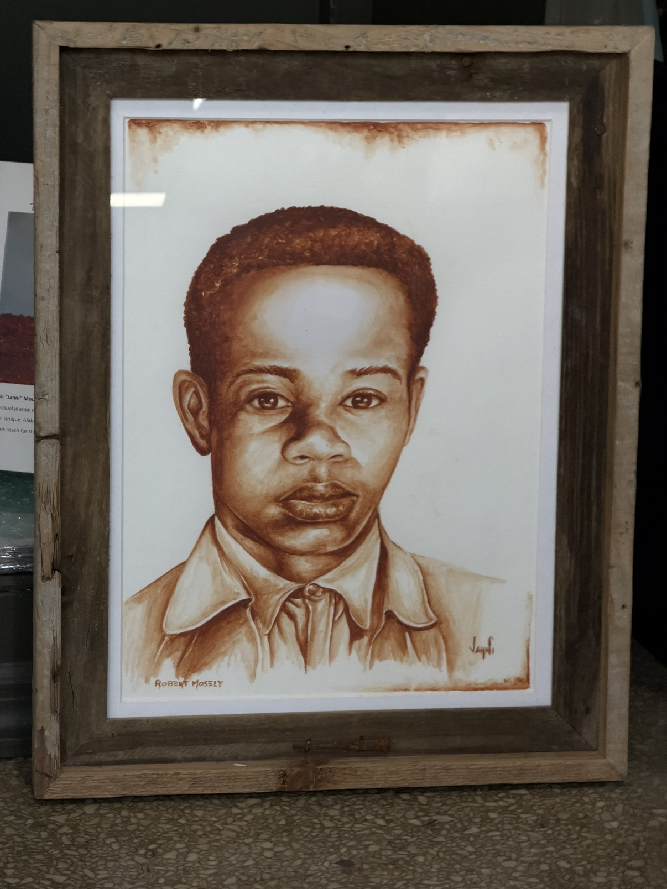
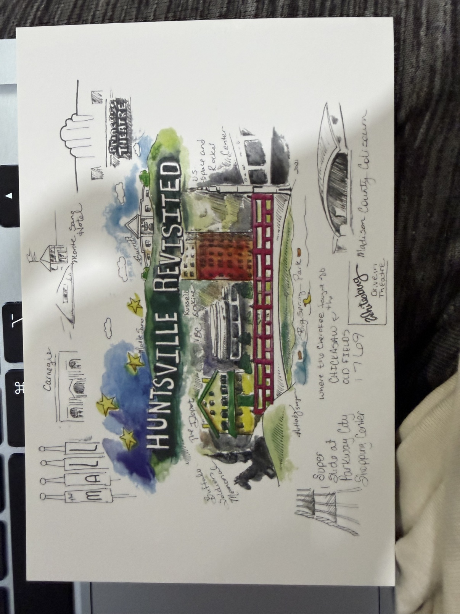
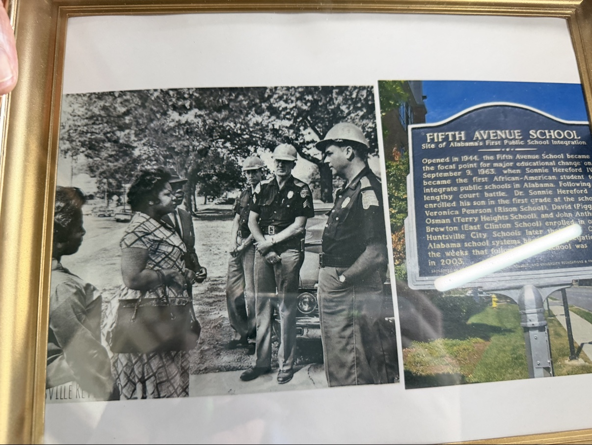

Say Their Names
The Equal Justice Initiative documents ten racial terror lynching victims in Madison County, Alabama, between 1878 and 1915. Huntsville spent most of the century since insisting it was not that kind of place. The Madison County Remembrance Project is doing the slow work of proving otherwise — collecting soil where they died, marking the ground, saying the names out loud. This page carries the ten names. It also carries an eleventh: a man the official count leaves out.
The work of remembrance
EJI’s Community Remembrance Project works county by county: soil is collected at or near the site of each lynching — one jar stays in the county, one goes to the National Memorial for Peace and Justice in Montgomery — then historical markers, then a county monument. In Madison County that work belongs to the Madison County Remembrance Project, founded in 2017. The collected jars are housed at Huntsville Revisited.
Soil rites have been held for Elijah Clark (June 2020), Ben Evans and Ephraim Hall (May 2021), Herman Deeley (March 5, 2022), and Robert Mosley (November 12, 2022). On December 7, 2024, the county dedicated its first EJI historical marker — for Robert Mosley, 134 years after his death.
One jar is still missing. Horace Maples was hanged on the Madison County Courthouse lawn in 1904, and permission to collect soil on the courthouse grounds has not been granted. The empty place where his jar belongs is its own exhibit: the Confederate monument on those same grounds came down in October 2020, and the county has not yet let the remembrance project gather a jar of dirt for the man its mob killed there.
The ten names
Ben Evans — April 17, 1878
Evans and Ephraim Hall were put through a short legal process full of contradictory statements, then lynched — the first of Madison County’s documented ten. The Remembrance Project collected soil for both men at Big Spring Park in May 2021; Hampton states the lynching itself took place at Big Spring, in the middle of the town that would rather forget it.
Ephraim Hall — April 17, 1878
Lynched with Ben Evans. In Hampton’s telling, the second man’s name came out as “Efrem Holmes”; every documentary source — EJI, the Remembrance Project, the National Memorial — says Ephraim Hall. This page follows the documents and keeps the discrepancy visible, because a wrong name repeated often enough invents one man and erases another.
Wesley Brown — October 9, 1883
At least fifty masked men took Brown from the county jail — the lone jailer handed over the keys rather than resist — and hanged him from a tree on the courthouse lawn, leaving his body for hundreds of spectators. He had been accused of murder. He was lynched days before his innocence was proven.
Robert Mosley — March 21, 1890
A mob of more than 500 pursued Mosley after a schoolteacher’s accusation. He was never tried — his account does not exist, because he never made it to a courtroom. He was lynched near New Market and buried near the site, and his family was denied access to his body. His name is also written Mosely and Moseley; the 2024 marker uses Mosley. His soil was collected on November 12, 2022, and the first EJI historical marker in Madison County was dedicated to him on December 7, 2024.

Mollie Smith — May 1897
Smith and Amanda Franks worked as cooks in the Kelly household and were accused of poisoning Josh Kelly. They were lynched in what is now Monrovia, near today’s Jeff Road and Capshaw. Hampton gives their ages as 18 and 19. The Remembrance Project’s own pages give both May 11 and May 12 for the date; the newspaper record has not yet settled the day, so this page does not pretend to.
Amanda Franks — May 1897
Lynched with Mollie Smith, on the same accusation. Franks’s name survives in the official lists, in the Remembrance Project’s work, and in the memory of a neighboring family: Dan Tibbs, whose mother knew both women, told their story to StoryCorps.
James Nance — May 1897
Lynched in the same episode as Smith and Franks, on the assumption that he had known about the alleged poisoning. He was 22 years old, per Hampton. No charge, no trial — guilt by proximity was enough.
Elijah Clark — July 23, 1900
The courthouse was raided, Clark was pulled from his cell, hanged, and riddled with bullets. The Remembrance Project held his remembrance rite and soil collection in June 2020. Four years after Clark, a mob would come back to the same jail for Horace Maples.
Horace Maples — September 7, 1904
A mob of more than 2,000 set the county jail on fire to get to Maples, caught him as he fled a second-story window, and hanged him from an elm on the courthouse lawn; his body was shot repeatedly. Police, sheriff’s deputies, and the Alabama National Guard were present and did not stop it. A grand jury indicted participants — and every one was acquitted or found innocent. No one was held accountable. His soil has still not been collected.
Herman Deeley — January 18, 1915
Lynched near Ditto Landing, in what was then the town of Taylorsville on the Tennessee River — the last of the ten. Hampton’s account: an argument at a cotton gin, a white man who cut the line, a shot mule, a chase. The Remembrance Project collected his soil at Ditto Landing on March 5, 2022.
The man outside the window
EJI counts racial terror lynchings from 1877 to 1950. Cheney was killed before that window opens, so he is not among the ten — the boundary of the archive performs its own erasure.
Cheney was an enslaved blacksmith in Madison County who hid separated Union soldiers near his shop until they could rejoin their units. Frank Gurley and other Confederates dressed in Union uniforms and tricked him into leading them toward the hiding place; when Cheney saw the trap, he ran. They shot him, hanged him, and dumped his body in a sinkhole near Deposit, Alabama, on Winchester Road between New Market and Gurley.
The account is Gurley’s own — told by one of the men who killed him, carried down and retold by Hampton. That provenance is stated here plainly, and it stays attached to Cheney’s name in this project’s research record. Hampton has bought a jar of his own and plans to ask the landowner near Deposit for permission to collect Cheney’s soil. A man murdered for helping soldiers escape to freedom, remembered only through his killer’s story, belongs in the record anyway — labeled, not laundered.
Where this memory lives
The soil jars and the wider record of Black Huntsville are kept at Huntsville Revisited, William Hampton’s museum at 2007 North Memorial Parkway. The walls hold more than the lynching display: on September 9, 1963, six-year-old Sonnie Hereford IV walked into Fifth Avenue School and became the first Black student to integrate a public school in Alabama. Remembrance in Huntsville is not one exhibit. It is a building full of them.


The project doing this work
The Madison County Remembrance Project is the community project carrying this work in Madison County — soil collections, historical markers, and a county monument still to come. They ask for volunteers, community partners, and sponsors.
Madison County Remembrance Project
Web: MadisonCountyRemembers.com
Email: madisoncntyremembranceproject@gmail.com
Facebook group: joinmcrp
The oral history on this page is William Hampton’s, told to a UAH PSC 440 class visiting Huntsville Revisited on October 13, 2026. The Counter-Archive’s research files carry each of these names with its full provenance; where the record is thin, the files say so.
Sources: Equal Justice Initiative, Lynching in America: Confronting the Legacy of Racial Terror (3rd ed.); Madison County Remembrance Project, madisoncountyremembers.com; William Hampton, Huntsville Revisited, October 13, 2026. Names and dates are subject to ongoing verification — see Recent Findings for corrections as the research proceeds.